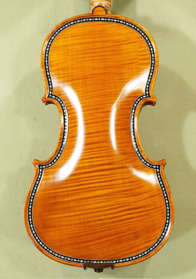

Stagg
Es una buena opción cuando se empieza en el campo de la música, cuando todavía no se ha aprendido solfeo y se descubre cómo sostener el arco o colocar las manos.
Gliga
Los Violines Gliga son conocidos en todo el mundo. Son instrumentos construidos en Rumanía, con un amplio catálogo dentro del cual ofrecen violines, violas, cellos y contrabajos.
Yamaha
Basado en los diseños de Stradivarius y optimizado con A.R.E. de Yamaha. tecnología, el violín insignia de Yamaha ofrece los mejores matices necesarios para crear música.

Corelli
es un instrumento de estudio que permite al violinista de nivel intermedio, explorar y avanzar en técnicas más complejas dentro del aprendizaje. El violín propone un sonido lleno de matices y un timbre cálido y bien equilibrado.